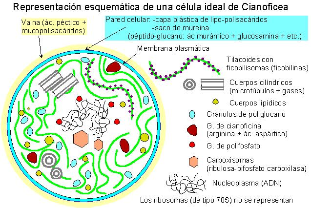

| Procariotas | Eucariotas |
| ADN en fibras circulares libres | ADN formando cromosomas asociados con proteínas y encerrados por membranas en el núcleo celular |
| Recombinación genética mediante
conjugación |
Recombinación genética mediante cariogamia y meiosis |
| Ribosomas 70S | Ribosomas 80S |
| Ausencia de orgánulos de membrana | Orgánulos presentes: plastos, mitocondrias, etc. |
| Flagelos rudimentarios de fibras proteicas | Flagelos verdaderos con microtúbulos rodeados por membranas: 2x9 + |
| -Algas procariotas -Bacterias Gram-negativas fotosintéticas con clorofila a y ficobilinas, que realizan fotosíntesis con desprendimiento de oxígeno |
| Clorofilas | |
| Caracteres físico-químicos | Pigmentos liposolubles Cadena de fitol + gr. cromático Tetrapirrol de cadena cerrada |
| Tipos | a, b (1 át. de O más) |
| Ficobilinas (ficobiliproteínas) | |
| Caracteres físico-químicos | Pigmentos hidrosolubles Proteína + gr. cromático: Tetrapirrol de cadena abierta |
| Tipos | c-Ficocianina (azul) |
| c-Ficoeritrina (roja) | |
| * También puede haber algo de b-caroteno y algunas xantofilas | |

| Unicelulares (cocoides) | libres: Chroococcus |
| fijas: Chamaesiphon | |
| Coloniales palmeloides: | Gloeocapsa |
| Filamentosas | |
| Sin diferenciación celular: Oscillatoria, Lyngbia | Con células diferenciadas (acinetos y/o heterocistes): Nostoc, Anabaena |